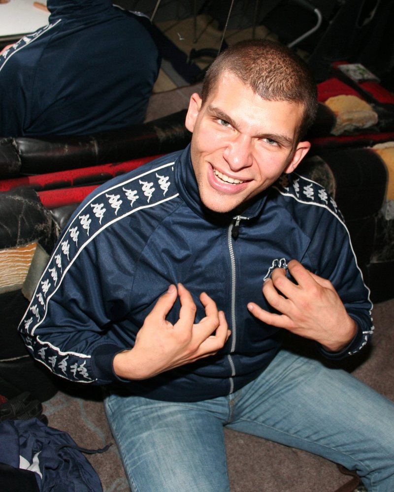

Tarek
Pass auf, du Schlaftablette. Mein Statement ist einfach folgendes: Die Leute haben überhaupt keine Ansprüche. Die Ansprüche sind auf ein widerwärtig winziges Maß … Guck mal, jetzt kommt hier Interview. Jetzt kann ich gar nichts mehr. Die Ansprüche sind auf ein winzig kleines Maß reduziert, und deswegen sind die Leute auch alle Berufslangweiler. Aber wir, wir sind Berufspartylöwen, verstehst du das? Deswegen … was weiß ich was. Komm, frag mich was, dann gebe ich dir Antwort. Frag mich was! Soll ich jetzt einfach mal hier so Gas geben auf …
Pogoradio
Ich frag dich jetzt was. Hey Tarek, wie sieht’s aus bei dir? Was ist wichtiger: Drogen oder Sex?
Tarek
Ich weiß nicht. Ich werde mit beidem geradezu verwöhnt, deswegen ist mir das scheißegal. Geht lieber morgens mal, wenn ihr aufsteht, 20 Liegestütze machen, anstatt hier Drogen und Sex morgens kalt.
Ey, weißt du, von wegen Drogen und Sex: Die Leute glotzen einfach 24 Stunden am Tag Fernsehen, und deswegen sind sie total behinderte Scheißwichser, weil von wegen hier Kommunikation – es gibt überhaupt keine Kommunikation. Ist mir scheißegal.
Pogoradio
Bist du schuld dran, oder? Wegen dir gehen die Leute ins Internet und gucken sich deine Videos an.
Tarek
Ich bin einfach nur geiler Reichtum.
Pogoradio
Ja, aber wegen dir gucken sie sich die Videos an, gehen wegen dir ins Internet …
Tarek
Geh auf www.sabotakt.com und guck dir die scheiß Videos an und werde total verblödet, verstehst du? Ich mach das nicht, ich mach es einfach nur schlimmer, aber es ist mir scheißegal. In zehn Jahren ist eh alles runtergegangen, das ist doch alles …
Pogoradio
Wie kannst du so was verantworten?
Tarek
Ey, ich habe einfach die Augen auf. Die Leute sind viel zu langsam für die ganze Scheiße, die können einfach nicht mithalten. Ey, weißt du, die Leute haben so kranke, ekelhafte, peinliche Werte und können damit überhaupt nichts anfangen. Aber weil sie selbst einfach nur zu faul sind, um ihre scheiß Werte einzuhalten, aber trotzdem geil drauf sind, dass alle anderen sie einhalten, müssen sie immer allen anderen einprügeln, dass alle anderen faul und dumm und langweilig sind. Aber ich sag nur: Die Perversen seid ihr! Die Perversen seid ihr!
Ich glaub, hier ist’s zu laut … Ein Freund hat mir hier schon … So ein albern blöder Skinhead mit verwaschenen Scheißhosen – das ist echt der schlechtgekleidetste Kandidat an dem Abend – der wollte mir ernsthaft verbieten zu schreien. Was soll denn das? Ich müsste ja eigentlich nur schreien: Das Erste, was wir machen müssen, ist mal diese beschissene Bank, auf der wir das drittklassige Interview führen, erst mal mit einer Axt in Stücke hacken und die Einzelteile entweder auffressen oder ins Feuer schmeißen und das Feuer dann hier auf dem Riesenrad entzünden, dass die ganze Scheiße endlich wieder brennt! Das ist mir scheißegal, du kannst mich mal am Arsch lecken mit deiner beschissenen Früher-Kacke!

Tarek
Ey, die neueste Errungenschaft auf deiner Pogoradio-Seite sind 100.000 Bilder von früher. Oh, wo Pogo-Raves und so … als ihr alle noch Haare am Sack gehabt habt, die noch nicht grau waren oder weiß. Ist mir scheißegal, verstehst du?
www.sabotakt.com – ich bin 21 Jahre, ich habe einen Riesenpenis, und morgen geht’s weiter und nicht gestern oder vorgestern oder heute! Es geht immer weiter, verstehst du? Wenn jetzt irgendeine Scheiße kommt: Das Einzige, was ihr in eurem langweiligen Leben lernt, ist abzuwarten. Und die Leute … ich kenne jetzt so viele Leute, die sind 20, 21, 22, und die sagen jetzt schon: „Dann warte ich mal noch ein Jahr.“ Ein Jahr, verstehst du? Eine Minute kann ich doch nicht mehr warten! Ein Jahr kann mich am Arsch lecken, ihr langweiligen, lahmarschigen Scheißhaufen! Ein Jahr abwarten – auf was denn, auf was denn?
Das Einzige, was ihr macht, ihr langweiligen Wichser, ist euer Abwarten zu gestalten – und das noch mit drittklassiger Scheiße! Wenn ihr es wenigstens mit was Anständigem machen würdet, was mal ein bisschen lustig ist. Aber euer Humor, der ist so was von unlustig, der ist so was von zum Einschlafen – und auf Schlafen habe ich leider überhaupt gar keine Lust. Ihr könnt meinetwegen jetzt ins Bett gehen, das ist mir scheißegal. Pogoradio von 23 bis 24 Uhr auf 105,4 Bermudafunk, jeden Mittwoch … dann geht hinterher halt. Mir ist das scheißegal. Zwei Stunden Schlaf für die Männer, drei für die Frauen, vier für die Idioten.